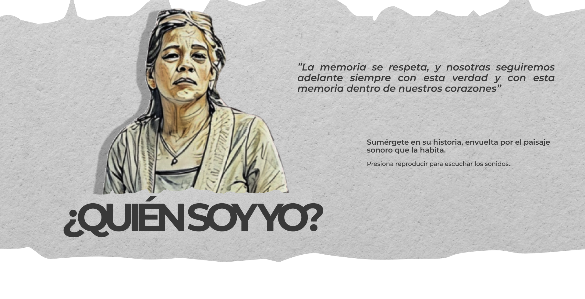

Nací el 5 de septiembre de 1952 en Sogamoso, Boyacá, justo encima de la catedral.
Crecí en la Ciudad del Sol, un lugar con historia. Allá, la gente todavía habla de los muiscas y del Templo del Sol, que los españoles destruyeron, pero que sigue vivo en la memoria. Mis tíos encontraron piezas antiguas en la tierra: figuras, vasijas, adornos. Con eso compraron mulas, carros y construyeron sus casas. No era solo oro viejo: era parte de lo que éramos.


Nací el 5 de septiembre de 1952 en Sogamoso, Boyacá, justo encima de la catedral. Crecí en la Ciudad del Sol, un lugar con historia. Allá, la gente todavía habla de los muiscas y del Templo del Sol, que los españoles destruyeron, pero que sigue vivo en la memoria. Mis tíos encontraron piezas antiguas en la tierra: figuras, vasijas, adornos. Con eso compraron mulas, carros y construyeron sus casas. No era solo oro viejo: era parte de lo que éramos.
De niña me tocó vivir la persecución contra la chicha. Era una bebida prohibida, pero nadie quería dejarla. En la finca la escondíamos en ollas enterradas para que no la botaran. Molíamos caña para hacer miel, y el maíz estaba en todo. Mi abuela lo ponía hasta en el caldo de ojo. De ella aprendí a pedir permiso antes de sembrar, a respetar el agua y a no jugar con el fuego.
Con el tiempo me dediqué a la cocina. No por romanticismo, sino porque era lo que sabía hacer bien. Empecé vendiendo comidas sencillas, y más adelante abrí un restaurante en el kilómetro 28 de la vía a La Mesa. Lo llamé El Zapatazo por una casualidad: unos extranjeros comieron un día, se fueron contentos y dejaron olvidados unos zapatos enormes. Los colgué en la entrada, y el nombre se quedó.
Después la gente lo empezó a llamar La Arepa Quesuda de la Mona, por mi pelo claro y por las arepas que servía, siempre grandes y llenas de queso. También hacía gallina criolla, cocinada despacio, con papa, plátano, yuca y un guacamole que la gente pedía por nombre. Venían de lejos a comer. A veces hasta el alcalde pasaba primero por mi mesa antes de ir al pueblo.No me hice rica, pero vivía bien. Me gustaba el trabajo, la gente, ver el restaurante lleno. Con el tiempo abrí otro negocio, y ahí trabajaba con mi hijo Eduardo. Él era responsable, serio, no tomaba ni se metía en problemas. Desde pequeño fue así.
Con el tiempo, el lugar ganó otro nombre que me llenaba de orgullo: “La Arepa Quesuda de la Mona”. Era por mi cabellera rubia y por esas arepas generosas, llenas de queso, que servía siempre calientes. La gente venía de lejos, y cuando el alcalde visitaba el pueblo, era tradición que su primera parada fuera en mi mesa.
Mi plato estrella era la gallina criolla, cocinada despacio, con papa, plátano, yuca, rellena y un guacamole que todos decían que era la gloria. Los clientes se iban diciendo que en ningún otro lado habían probado una gallina igual, y esas palabras se quedaban conmigo como un premio al esfuerzo.
Con los años, tuve que cerrar el restaurante, pero su recuerdo sigue vivo en mí y en todos los que se sentaron a mi mesa. Cada bocado que sirvió “El Zapatazo” llevaba un pedazo de nuestra cultura, el amor por lo nuestro y la alegría de compartir.


Eduardo nació en Bogotá, en la Clínica Veracruz, un día del amor y la amistad, a las tres de la tarde. Lo esperé con ilusión, como se espera lo que una sabe que le va a cambiar la vida. Fue el segundo de mis cuatro hijos, y desde niño se notaba distinto. Estudió en la Escuela Mariscal Sucre, donde se graduó como Brigadier Mayor del colegio. Más adelante quiso estudiar Derecho. Decía que quería ayudar a la gente que no tenía cómo defenderse, a los presos políticos, a los que nadie escuchaba.
Yo tenía un negocio de piscinas en Villeta, La Rondinela, y él siempre me ayudaba. A veces trabajábamos hasta tarde, pero no se quejaba. Era cumplido y trabajador, no conocía la pereza. Siempre me sentí tranquila con él.


Desde ahí mi vida se pasó entre un lugar y otro, buscándolo; todo se partió en dos. Recuerdo que empecé a ir a la iglesia a escuchar profecía, y cierto día el predicador me dijo que mi muchacho está en paz y que estaba con Dios; yo di las gracias. Era lo que yo quería saber después de cinco meses de búsqueda: que mi hijo estaba en paz.

Eran las siete y treinta de la mañana y Eduardo no había llegado a trabajar; teníamos como cinco años manejando otro negocio, un restaurante. Eduardo nunca había llegado tarde en la vida. Nos habíamos despedido a las dos de la mañana y, con un beso, le dije: “Papito, cuidado, acuérdese que mañana hay que madrugar a trabajar”. Eduardo nunca llegaba tarde, un frío recorrió mi cuerpo, ya no me hallaba; una tiene intuición.
Esa mañana, Carolina, una de las niñas que trabajaba conmigo, me vio mientras me fumaba un cigarrillo en la puerta del restaurante y me preguntó si quería que me lo leyera. Acepté, y al fumar y ver qué había en el cigarrillo, vi una cruz, a lo que ella respondió que debía prepararme porque algo difícil iba a pasar en mi vida. Se venían malas noticias.
Teníamos nuestro restaurante en la Escuela de Seguridad Vial de la Policía Nacional. Ese día salí más temprano que nunca; siempre era la primera que llegaba y la última que salía, pues los antiguerrilla llegaban tarde y había que darles de comer.
Cuando entré en casa, me di cuenta que él había estado allí. Lo primero que vi fue la foto de él en la pared; un plato con una cacerola de huevo en la mesa, vacío; su anillo de graduación y la imagen de la Virgen de Santa Marta con una veladora al pie, y la Biblia sobre la mesa. Era el 4 de marzo de 2008.
Desde ahí mi vida se pasó entre un lugar y otro, buscándolo; todo se partió en dos. Recuerdo que empecé a ir a la iglesia a escuchar profecía, y cierto día el predicador me dijo que mi muchacho está en paz y que estaba con Dios; yo di las gracias. Era lo que yo quería saber después de cinco meses de búsqueda: que mi hijo estaba en paz.
Habían pasado cinco meses y ese día recibí en la casa una llamada fría, desnuda y rapaz que me decía que tenía que acercarme a la morgue en Bogotá porque parecía que habían encontrado a mi hijo. Yo grité; mi chiquito Jonathan gritó conmigo —yo por eso adoro a ese niño, porque siempre estuvo a mi lado—. Yo no sabía qué hacer, a mí todo se me olvidó.
Llegó mi familia y solo pude ir a la morgue hasta las tres de la mañana; no tenía fuerzas. Cuando llegué allá, creí que lo iba a ver, que me iban a mostrar el cuerpo, pero me lo mostraron en un computador, frente a otros muchachos. Me preguntaron si ahí estaba Eduardo, y ahí estaba mi hijo.
Era el 29 de agosto de 2008 y Eduardo estaba en Cimitarra. No entendía por qué, me preguntaba todo, “¿por qué?”, pero no hice más que coger carretera y salir a encontrarme con mi hijo. Cuando llegué allá, recuerdo que lo toqué y lo sentí como gelatina; cuando lo vi, reconocí el candado que tenía como barba. Era mi Eduardo, definitivamente.
Fueron días de infierno, pasaron muchas cosas: desenterramos a mi hijo en un cementerio de Cimitarra; me dijeron que era guerrillero y que había muerto en combate, pero cuando vi el archivo me enteré de que tenía las botas al revés y aparecía con una mochila, un arma y una granada. Mi hijo nunca usaba mochilas, ni era hombre de guerra; trabajaba conmigo en el restaurante y era estudiante de Derecho.
Cuando nos mostraron el camuflado que tenía debajo de la cabeza, no tenía los tres tiros que le habían dado en su cuerpo, pero sí tenía sangre. Nos dijeron que tenían que quemar el cajón en el que estaba para llevárnoslo en otro. Así que lo incineraron y tuvimos que llevar a mi hijo de regreso a Bogotá el día de mi cumpleaños, el 5 de septiembre de 2008. Yo le decía: “Papito, usted, que el año pasado me llevó serenata”...
Esos días se pasaron entre sueño y delirio. Me vi subiendo una montaña con él; él estaba descalzo, sin camisa, yo estaba cansada, pero él me decía que yo podía seguir adelante, llegar a la cima, pero nunca llegaba; la cima estaba muy lejos.
Tuve que enterrarlo. A mí no me había dolido tanto una muerte en mi vida, ni siquiera la de mi esposo, que me había dejado con cuatro niños pequeños a quienes aprendí a levantar y saqué adelante. Ni siquiera esa muerte me había dolido tanto como la de Eduardito; y ni se diga mi mamá, que adoraba a su nieto.
A partir de ahí fue el calvario, sin entender nunca qué había pasado, cómo todo eso me había ocurrido, por qué lo habían matado, quién se lo llevó. El sepulturero del pueblo me dijo que el 5 de marzo, el día de la muerte de mi hijo, lo habían visto en el pueblo (Cimitarra), tomando gaseosa con otro muchacho; que un camión del ejército había pasado a recogerlos y ellos se habían subido allí sin ser forzados. A ese señor después lo mataron.
En el entierro de mi hijo, un periodista me dijo que averiguara en Soacha, que allá podía encontrar pistas, así que fui a la Personería de Soacha y me comentaron que otros muchachos habían desaparecido en circunstancias similares a las de mi hijo. Luego conocí a la esposa del muchacho que estaba con mi hijo, el muchacho con el que lo habían visto tomando gaseosa en Cimitarra.
El personero de Soacha me ayudó a dar los primeros pasos para denunciar en la Fiscalía, él ya había alertado sobre muchachos que estaban desapareciendo en Soacha y la gente decía que estaba loco. Yo puse la denuncia en la Fiscalía y decidí dejar el caso en Bucaramanga.
Conocí a Luz Marina Bernal, a la Paisa, a Zoraida: las primeras madres que también habían perdido sus hijos. Ahí, en ese momento, empezó MAFAPO; desde ahí comenzamos a estar juntas en esta lucha. Tengo el periódico que salió en Cimitarra diciendo: “Primeros falsos positivos hallados en Cimitarra”. Ya se había desatado el escándalo.
La primera audiencia que tuve fue con Kelly, la esposa de Andrés, el amigo con quien habían matado a mi hijo. Tuve que viajar a Bucaramanga desde Bogotá —muchas veces sin un peso—. Durante esa primera audiencia tuve que dormir algunas veces en el parque central porque no tenía con qué pagar un hotel; había perdido mi restaurante. Desde el momento en que mi hijo desapareció, mi vida se detuvo; no pude volver a trabajar. Me dediqué a encontrar la verdad sobre lo que había pasado; era un trabajo de tiempo completo.
Un día, en el barrio San Cristóbal, en Bogotá, una señora me comentó que había visto el cuerpo de mi hijo en Cimitarra. Ella era de allá y vivía allá cuando pasaron esas cosas; estábamos en un encuentro de víctimas y ella lo había visto. Me dijo que se enteró de que había un reclutador que se había llevado a los muchachos al ejército; a él le habían pagado por eso.
Hay que decir que, de todas formas, hubo gente muy buena en el camino. Unos abogados de una ONG nos ayudaron mucho en todo esto; siempre acompañaron nuestras audiencias desde 2008. Nosotras empezamos a organizarnos para luchar por nuestros hijos, ya nos habían utilizado muchos congresistas y periodistas, pero nadie nos ayudaba a encontrar a nuestros muchachos. Hicimos el registro de la organización en el 2016, después de nueve años de andar de un lado para otro sin poder resolver nada.
Tuve que subir una vez con la Sijín, como a las dos de la mañana, a reconocer el lugar donde habían ejecutado a mi hijo. Se hizo toda la reconstrucción del hecho; me enteré de que a mi hijo no lo habían matado ahí, que ahí lo habían enterrado. Tomé algo de la tierra que había en esa montaña.
Las madres me acompañaron a muchas de las audiencias, el día de la audiencia final, un informante identificó a los responsables; ellos señalaban en fotografías a las personas que habían asesinado; señalaron a mi hijo y a otro muchacho diciendo: “Estos son los míos”. Pensé: “Dizque los míos, malditos”.
Lo bonito de todo eso fue que, en la plaza de Bucaramanga, ese día había como 3 000 víctimas acompañándome. Aquella plaza en la que tuve que dormir a la intemperie un día, estaba llena de bombas blancas.
Mi recompensa fue demostrar que mi hijo no era un guerrillero. A los culpables les dieron hasta 28 años de cárcel. Había 8 oficiales del Ejército involucrados: un coronel, un sargento, soldados profesionales y otros rasos.
Luego llegó el proceso de paz y aparecieron la Comisión de la Verdad y la JEP. Me gustó que la Comisión de la Verdad logró reconstruir algo de lo que había pasado. Mi hijo había estado en el terminal de transportes; encontraron el billete de bus a su nombre. Me di cuenta de que los responsables habían engañado mucho a la justicia. La Comisión logró la aclaración de algunos hechos, pero nunca logré saber la historia completa.
Los responsables no pagaron la condena que habían recibido en la justicia ordinaria, solo cuatro años porque se acogieron a la JEP. Sentí que volví a empezar: habían pasado cinco años en la ordinaria y 18 audiencias. Para mí era increíble; la Comisión nos había prometido la verdad, pero lastimosamente nunca fue posible tenerla completa. Yo no estaba de acuerdo con que ellos salieran, pero me había hecho ilusión saber, al menos, la verdad.
Luego mi abogado me avisó que habían soltado a los responsables, y ahora lo que me han dicho es que, como no han llegado al subcaso mío, entonces no han tenido audiencias sobre mi caso. Yo quiero que la JEP me muestre a esas personas. ¿A quién voy a perdonar? Tengo la audiencia el 28 y 29 de octubre de 2025 en Cúcuta. Tendremos que vernos de frente y que me pidan perdón.
Yo digo: ¿Dónde está la reparación para nosotras? Eso es por lo que yo estoy peleando ahora: tener mi vida digna, tener mi muerte digna. Quiero sentir que valió la pena mi lucha, aunque yo sé que el país la reconoce.
Mi fuerza hoy es la juventud que nunca nos ha dejado solas: estudiantes, muchachos de universidades y colegios, que con sus abrazos nos devuelven la esperanza. Ellos son la prueba de que nuestra lucha no ha sido en vano. Yo seguiré exigiendo que nos reparen con dignidad, que podamos vivir y morir sabiendo que valió la pena no rendirse. Que este país reconozca, no solo con palabras, sino con hechos, que nuestras vidas importan y que la verdad y la justicia no se negocian.

Aún hoy siento el llamado del mal de madre, esa extraña ternura que se queda en el cuerpo después de haber dado vida, como si mi vientre guardará para siempre la memoria de los antojos y las sensaciones del embarazo. Es un amor que no se apaga, una sensibilidad que también se expresa en mi manera de cocinar. Para mí, la cocina es prolongar ese cuidado: cada plato lleva la ternura, la energía y la fuerza de la vida que una vez llevé dentro. Alimentar se vuelve un acto sagrado, un puente entre lo más profundo de mi cuerpo y la comunidad que me rodea.Cocinar me despierta el alma, me lleva a otros tiempos y a otros lugares. Me apasiona hacerlo en comunidad, en esas ollas grandes donde el compartir y el amor se mezclan con el aroma de los alimentos. Porque sé que al final es el amor lo que nos mueve, lo que teje un lazo indestructible entre las madres y sus hijos. La cocina me ha conectado con mi historia y con otras mujeres que, como yo, han caminado entre el dolor y la resistencia. Recuerdo la olla comunitaria que hicimos en (fecha y lugar): allí preparé un sancocho, mi plato favorito, como homenaje a la memoria de quienes hemos perdido y como una apuesta por la esperanza de justicia y verdad.Ese día, varias víctimas nos reunimos para cocinar juntas. Lo hicimos para honrar, para reclamar, para que no se repita, para mirar de frente a los victimarios y exigir la verdad con la dignidad que merecemos. En ese fuego y en esas manos, cocinar en comunidad se volvió un acto de resistencia, un gesto sagrado que nos sostuvo y nos dio fuerza para seguir.